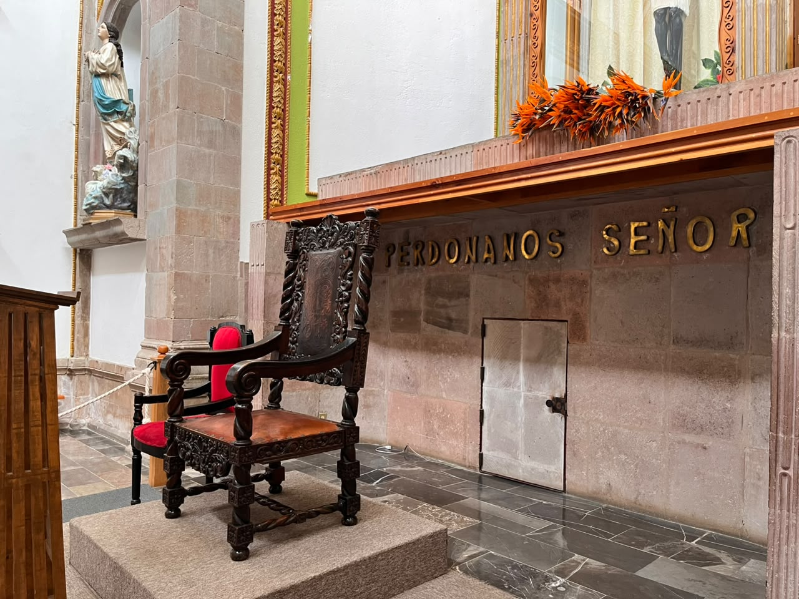
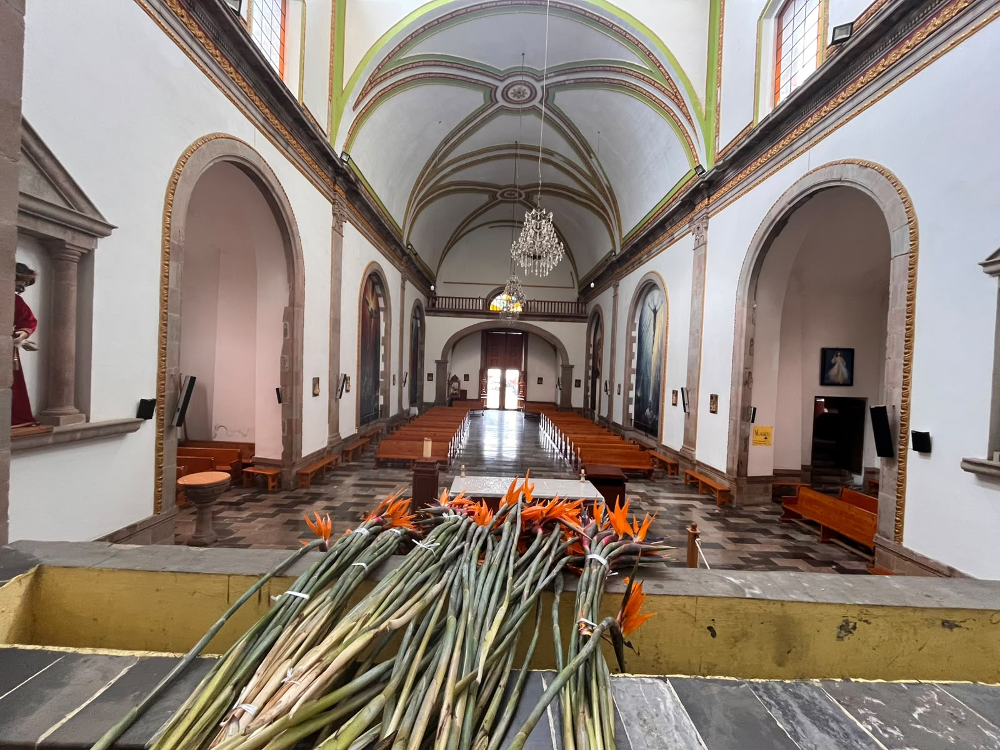

Descubre la belleza, la historia y la fe que hacen de la Iglesia de Santa María Huacatlán un tesoro cultural de Valle de Bravo.
Este templo se encuentra en el barro de Santa Maria Ahuacatlan en Valle de Bravo,Estado de Mexico, muy cerca de la zona del centro.
Su direccion es ameyal, en la colonia Santa Maria Ahuacatlan
Su historia es muy interesante.
Originalmente fue conocida como la capilla del calvario y posteriormente fue dedicada ala asuncion de Maria. Su reconsruccion comenzo en 1984t

Ubiacion
Este templo se encuentra en el barrio de Santa María Ahuacatlán, en Valle de Bravo, Estado de México, muy cerca de la zona del centro. Su dirección es Ameyal, en la colonia Santa María Ahuacatlán.
